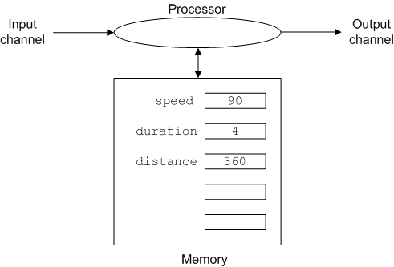

Once we have the necessary data in memory we "process" it. Processing refers to the manipulation of data stored in memory. Most procedural languages use an assignment statement to specify the processing to be performed. The form of an assignment statement is: name = expression. The assignment statement instructs the computer to calculate the value of expression and to store the result and label it name. Here's an example in Python,
distance = duration * speed This statement causes the processor to retrieve the values of
duration and speed from memory, multiply them,
store the result in memory and label it distance. The effect on
the state of the computer is shown below.

That assignment statement looks a lot like a mathematical equation. This is a holdover from one of the earliest programming languages FORTRAN (short for FORmula TRANslator), and is both a blessing and a curse. It is a blessing because most people have some experience with equations, and assignment statements are a lot like equations. It is a curse because they are not exactly like equations.
The first unimportant difference is that the statement above uses an
asterisk to specify multiplication where we are used to using a times symbol, ×, that looks like an x. However
most computer languages can't use an x for multiplication because x could be
a name, and computers don't have an easy way to tell which x's in your
program mean perform a multiplication and which ones are names. To avoid
confusion an entirely different symbol, *, is used for
multiplication. This is not Python-specific all the mainstream languages use
the * for multiplication. In fact humans don't really use x for
both multiplication and names, we just think we do because of the limited
choices on our computer keyboard. When we write with a more flexible tool
though, like a pen on paper, we usually use x as a name and ×
for multiplication. The other basic operators are the ones you are used
to:
+ for addition- for subtraction/ for divisionThe other basic operation is exponentiation or informally "powers". When
we do math on paper we write 23 for "two cubed" or 2 × 2
× 2 but early programming languages had no easy way to type a
superscript and so adopted other notations. Python uses ** for
exponentiation so 2**3 for two-cubed (the other common choice in
programming languages is ^ or 2^3). The pair of asterisks is to remind us of
repeated multiplication.
The fact that assignment statements look a bit like equations, has
prompted many people to refer to the names of memory locations (i.e.
rate, duration and distance) as
variables, and programmers do this too. It's not inaccurate since
the same name can refer to different values at different times in the life of a program. But it is
crucial to remember that assignment statements are not equations.
To emphasize this consider the following example,
x = x + 1Depending on how long it's been since you thought about equations carefully this may not look odd at first, but mathematically it is nonsense because there is no number that is equal to itself plus 1!
It is however perfectly valid and sensible Python. Here's how the computer interprets it.
Fetch the value of x from memory, add 1 to it, and then store the result back in memory labelling the new value x.
So in Python this assignment statement says to increment the value of x by
1. The key here is that assignment statements should be read from right to
left. Remember the form of the assignment statement was: name =
expression. The expression on the right is evaluated and the result
stored using the name on the left. Note that the expression is always on the
right and the name always on the left. While it is ok to write x = x +
1 Python will complain and generate an error message if you write
x + 1 = x. Try it in IDLE and see.